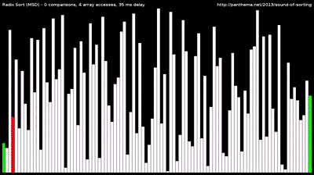

About Me
I am a results-driven machine learning engineer with a background in project coordination and management. I am highly skilled in communication and teaching, with a keen eye for detail and exceptional time management ability. I specialize in building machine learning models using Python and Tensorflow, and adept in data research, processing, and analysis utilizing tools such as NumPy and Pandas.
Portfolio
Space Bubbles!

- Arcade-style game inspired by Space Invaders and Bubble Shooter
- Created during the Holberton Hack Sprint in a three person team
- Responsible for collision detection, game logic, and sprite artwork
Technologies: Python, Pygame, REST API, SQLite
Space Bubbles! ReadmeYOLO Object Detection

- Implementation of YOLO algorithm to classify objects in images
- Applies boxes, confidence, and class name to detected objects
Technologies: Python, Tensorflow, NumPy, CV2
YOLO Object DetectionSorting Algorithms
- A selection of sorting algoriths built in C
- I put this in mostly because I wanted to add a gif as the image
- I will add a better project later
Technologies: Plain ol' C
Sorting Algorithms
Social Media